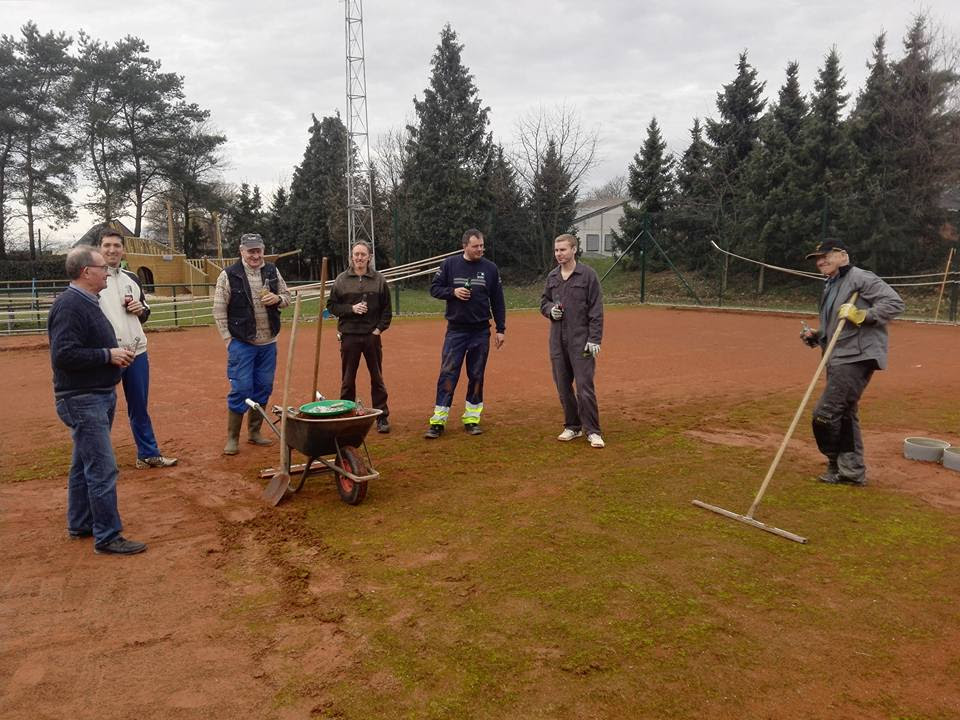

Buitenploeg: lente-opmaak terreinen 2 Maart 2019 Algemeen Het slechte weer van de laatste weken kluistert de enthousiaste buitenploeg nog even vast op de zetel, maar vroeg of laat komt het goede weer er terug aan, en dan vliegen we er weer in! Nieuwe kandidaten voor de buitenploeg kunnen een berichtje sturen naar: Sven Baeten (0494/07 77 22), Dennis Poelmans (0474/80 96 71) of Dennis Langens (0476/04 13 59), of contact opnemen met iemand anders van de buitenploeg. Dan zul je worden toegevoegd aan de WhatsApp-groep “Terreinen tennis” en blijf je op de hoogte van de activiteiten. Hieronder nog even een kort overzicht van wat de opmaak van onze terreinen allemaal inhoudt: Al vele jaren worden de terreinen verzorgd door eigen leden. Hier is heel het jaar door onderhoudswerk aan en het begint allemaal met de grote lente-opmaak. Ieder jaar vanaf maart worden alle netten & lijnen van de pleinen gehaald. Dan wordt er 2-3mm oude gravel afgeschraapt & afgevoerd (ca. 1.5 container) en worden de pleinen losgemaakt. Daarna worden er 40-45 zakken van 40kg nieuwe gravel op ieder plein getast en deze worden gelijkmatig verdeeld. Vervolgens is het vele malen aanwellen om dan tenslotte de lijnen weer te leggen en de netten terug te hangen. Dit is een heel karwei, maar met voldoende helpende handen en een plezante sfeer in het eerste lentezonnetje, kan dit ook best wel aangenaam zijn! Alle helpers worden ook voldoende voorzien van spijs & drank. Er zijn 2 grote voordelen aan deze werkwijze: de pleinen worden grondiger en beter opgemaakt dan door een gespecialiseerde firma, waardoor de kwaliteit van onze pleinen zeer goed blijft. Een tweede voordeel: nu betalen wij ca. 2.500 € aan gravel & materialen, een firma vraagt 1.000 € per plein, en wij hebben er 6. In 2020 gaan we vol goede moed verder op deze manier. Het blijft een uitdaging om voldoende volk bij elkaar te krijgen. Veel van de vrijwilligers van de harde kern hebben de pensioengerechtigde leeftijd al een tijdje overschreden, dus vernieuwing en verjonging blijft nodig. We willen zeker niemand verplichten en zijn er ons van bewust dat niet iedereen zich vrij kan maken op de werkbare dagen - die natuurlijk bepaald worden door het weer in het voorjaar- Wij willen deze werkwijze nog vele jaren kunnen verderzetten. Dit -en het uitbaten van de kantine met vrijwilligers- zorgt ervoor dat we de lidgelden democratisch laag kunnen houden 